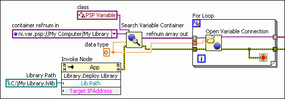

You must deploy shared variables to the Shared Variable Engine (SVE) before you can read and write those shared variables over a network. Deploying a shared variable creates a memory space for the shared variable in the SVE. Undeploying a shared variable frees the memory resources allocated to that shared variable.
When you run a VI that reads or writes a shared variable with a Shared Variable node, LabVIEW automatically deploys the project library that contains that shared variable. However, LabVIEW does not automatically undeploy the project library when the application terminates. Therefore, you do not need to deploy shared variables before reading and writing them with Shared Variable nodes, but you do need to undeploy those shared variables to free the memory resources allocated to those shared variables. Additionally, you must deploy shared variables explicitly if you are reading and writing shared variables with other methods. The following list describes the methods you can use to deploy and undeploy shared variables.
Edit-time method�Deploy and undeploy shared variables at edit-time when you are developing an application that accesses a small number of shared variables.
Run-time method�Deploy and undeploy shared variables at run-time when you plan to distribute an application as a stand-alone application. Deploying and undeploying shared variables at run-time also is useful if your application accesses a large number shared variables.
Note��If you plan to distribute a stand-alone application that uses shared variables, do not include the .lvlib file in an LLB or in the executable. Use the Source File Settings page of the Application Properties dialog box to change the Destination of the .lvlib file to a destination outside the executable or LLB.
Deploying and Undeploying Shared Variables at Edit-Time
To deploy a shared variable, right-click the project library in the Project Explorer window that contains the shared variable and select Deploy. This action deploys all of the shared variables in the project library to the SVE. Perform this action before running applications that read and write shared variables with methods other than using Shared Variable nodes.
To undeploy a shared variable, right-click the project library that contains the shared variable and select Undeploy.
Deploying and Undeploying Shared Variables at Run-Time
(Windows) To deploy shared variables at run-time, place a checkmark in the Deploy shared variable libraries at application execution checkbox on the Shared Variable Deployment page of the Application Properties dialog box.
You also can use the Deploy Library and Undeploy Library methods on any platform to deploy and undeploy libraries that contain shared variables. For example, in the following figure, the Deploy Library method deploys My Library.lvlib before the Search Variable Container function searches for the shared variables in that project library. The Open Variable Connection function then opens connections to those shared variables.

In the following figure, the Undeploy Library method undeploys My Library.lvlib after the Close Variable Connection function closes connections to the shared variables in that project library.